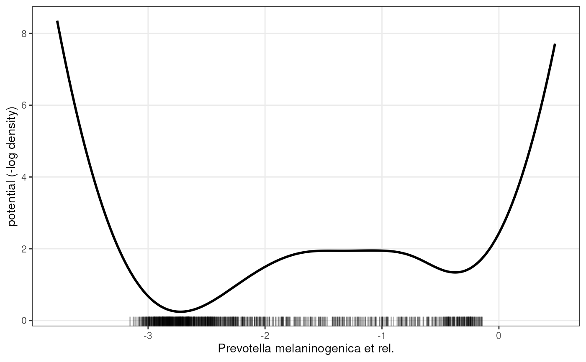

Plot the density landscape of a variable
Source:R/AllGenerics.R, R/plotLandscape.R, R/zzz-mae.R
plotLandscape.RdplotLandscape() draws the density of a variable over all
samples, or its potential, the negative log density. Peaks of the
density, valleys of the potential, suggest alternative states.
Usage
plotLandscape(x, ...)
# S4 method for class 'SummarizedExperiment'
plotLandscape(
x,
y,
assay.type = "counts",
scale = c("density", "potential"),
group.by = NULL,
bw = "nrd0",
adjust = 1,
...
)
# S4 method for class 'MultiAssayExperiment'
plotLandscape(x, ..., experiment = 1L)Arguments
- x
a
SummarizedExperimentobject.- ...
additional arguments passed to
geom_line.- y
Character scalar. Specifies the variable: a column ofcolData(x), a row ofassay(x, assay.type), or"<dimred>:<component>".- assay.type
Character scalar. Specifies the assay to retrieveyfrom whenyis a feature name. (Default:"counts")- scale
Character scalar. Draws the density ("density") or the potential ("potential"). (Default:"density")- group.by
Character scalar. Specifies the column fromcolData(x)that splits the samples into curves. (Default:NULL)- bw
Numeric scalarorCharacter scalar. Bandwidth of the kernel, passed todensity. (Default:"nrd0")- adjust
Numeric scalar. Multiplies the bandwidth. (Default:1)- experiment
Character scalarorinteger scalar. For aMultiAssayExperiment, the experiment to plot; its samples get thecolDataofx. (Default:1L)
Details
Densities are Gaussian kernel estimates; the bandwidth sets how many states can appear. Each sample counts once, so subjects with more samples weigh more. Ticks on the x axis mark the samples.
References
Lahti L, et al. (2014). Tipping elements in the human intestinal ecosystem. Nature Communications 5:4344.
Examples
# Prevotella abundance at the first sample of each subject
data("hitchip1006", package = "miaTime")
tse <- hitchip1006[, hitchip1006$time == 0]
tse <- mia::transformAssay(tse, method = "relabundance")
tse <- mia::transformAssay(tse, assay.type = "relabundance",
method = "log10", pseudocount = 1e-4, name = "log10")
plotLandscape(tse, y = "Prevotella melaninogenica et rel.",
assay.type = "log10", scale = "potential")
